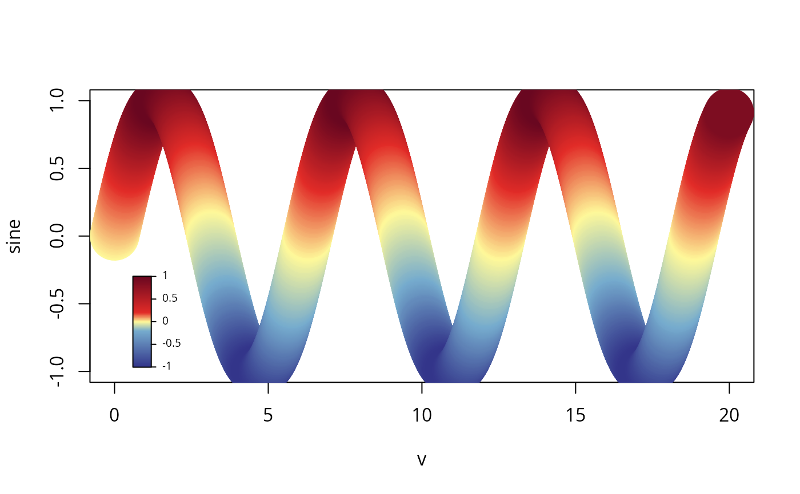

Create a heatmap legend based on calibrated color ramp values
Arguments
- x
Position of the legend or the left coordinate of legend box.
- y
Coordinate of the upperleft coordinate of the legend (if needed).
- shift
Used instead of the inset argument of the default legend. If plotted within the inner plotting area, the x and y user coordinates with which the position of the legend will be shifted to be shifted.
- ramp
A calibrated color ramp object. Either
rampor bothcolandbreaksare required.- col
Vector of colors.
- breaks
Breaks between the colors.
- zlim
A numeric vector with two values, passed to
trimramp. The low and high extreme values to be shown on the legend.- height
Height of the legend bar in inches.
- width
Width of the legend bar in inches.
- tick.length
The length of the legend's ticks.
- cex
Legend size scaler.
- box.args
the box's arguments.
- horizontal
Legend orientation. Not yet implemented!
- at
Where should the legend be drawn in the z dimension?
- label
What are the labels
Examples
# Examples will come here
plot(1:10)
